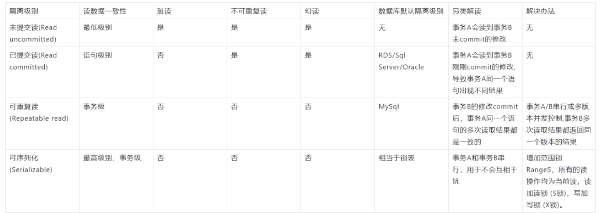
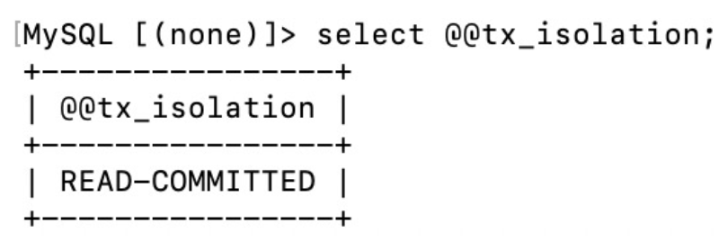
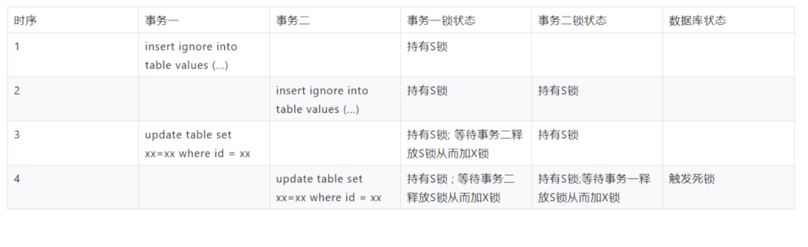
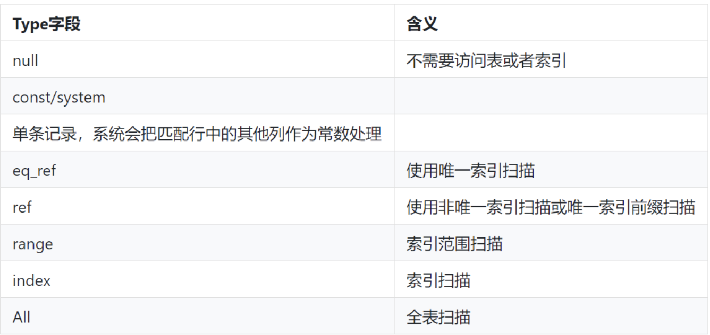
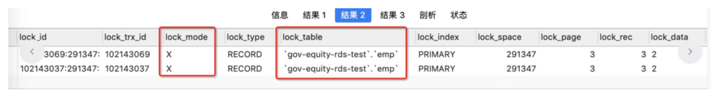
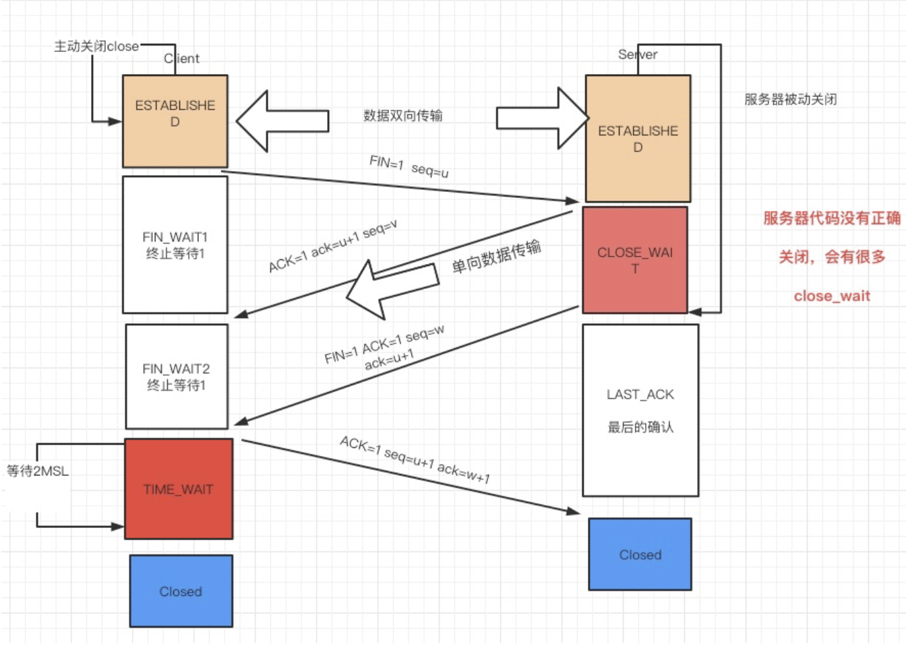

1.6.2.1.1. 切换用户
切换app用户
sudo su - app
1.6.2.1.2. 磁盘
java.io.IOException: 磁盘空间不足
- 磁盘状态
df -h
- du查看文件夹大小
du -sh *
- 查看文件大小
ls -lh
1.6.2.1.2.1. df
- -a 列出所有文件系统
- -h 以人类刻度样式按照1024进制
- -H 和-h类似，按1000进制
| 参数名 | 说明 |
|---|---|
| Filesystem | 文件系统 |
| size | 容量 |
| Used | 使用量 |
| Avail | 可用量 |
| use% | 使用率 |
| Mounted on | 路径 |
1.6.2.1.3. 系统最大线程数
- 命令查询系统最大用户线程数，max user processes
ulimit -a
1.6.2.1.4. cpu过高
top查询cpu使用率最高的进程
启动参数
| 参数名 | 说明 |
|---|---|
| -n | 指定top结果输出次数 |
| -p | 进程id |
进程内指令
| 参数名 | 说明 |
|---|---|
| H | 已线程维度进行查看 |
| N | 按照pid进行排序 |
| M | 内存使用率排序 |
| P | 按照cpu使用率排序 |
结果参数：
| 参数名 | 说明 |
|---|---|
| PID | 进程id |
| USER | 进程所有者用户姓名 |
| PR | 进程动态优先级 |
| NI | 进程静态 优先级 |
| VIRT | 使用虚拟内存数量 |
| RES | 物理内存数量 |
| S | 进程状态、D不可中断睡眠状态R运行S睡眠T跟踪/停止 Z 僵尸进程 |
| %CPU | 使用cpu使用率 |
| %MEM | 使用内存使用率 |
| TIME+ | 进程使用cpu累计时长 |
| COMMAND | 启动进程使用的命令行 |
利用top查到占用cpu最高的进程pid
1、top -Hp pid //根据进程id查找最高的线程
2、首先利用 printf "%x \n" 将tid换为十六进制：xid 线程id
3、 jstack -f 14 |grep nid=* -A 10
4、查看cpu高的线程 文件命名jvm-busy-thread.sh
执行方式：./jvm-busy-thread.sh -p pid -c '检测次数，默认5'
#!/bin/bash
# @Function
# Find out the highest cpu consumed threads of java, and print the stack of these threads.
#
# @Usage
# $ ./show-busy-java-threads.sh
#
# @author Jerry Lee
readonly PROG=`basename $0`
readonly -a COMMAND_LINE=("$0" "$@")
usage() {
cat <<EOF
Usage: ${PROG} [OPTION]...
Find out the highest cpu consumed threads of java, and print the stack of these threads.
Example: ${PROG} -c 10
Options:
-p, --pid find out the highest cpu consumed threads from the specifed java process,
default from all java process.
-c, --count set the thread count to show, default is 5
-h, --help display this help and exit
EOF
exit $1
}
readonly ARGS=`getopt -n "$PROG" -a -o c:p:h -l count:,pid:,help -- "$@"`
[ $? -ne 0 ] && usage 1
eval set -- "${ARGS}"
while true; do
case "$1" in
-c|--count)
count="$2"
shift 2
;;
-p|--pid)
pid="$2"
shift 2
;;
-h|--help)
usage
;;
--)
shift
break
;;
esac
done
count=${count:-5}
redEcho() {
[ -c /dev/stdout ] && {
# if stdout is console, turn on color output.
echo -ne "\033[1;31m"
echo -n "$@"
echo -e "\033[0m"
} || echo "$@"
}
yellowEcho() {
[ -c /dev/stdout ] && {
# if stdout is console, turn on color output.
echo -ne "\033[1;33m"
echo -n "$@"
echo -e "\033[0m"
} || echo "$@"
}
blueEcho() {
[ -c /dev/stdout ] && {
# if stdout is console, turn on color output.
echo -ne "\033[1;36m"
echo -n "$@"
echo -e "\033[0m"
} || echo "$@"
}
# Check the existence of jstack command!
if ! which jstack &> /dev/null; then
[ -z "$JAVA_HOME" ] && {
redEcho "Error: jstack not found on PATH!"
exit 1
}
! [ -f "$JAVA_HOME/bin/jstack" ] && {
redEcho "Error: jstack not found on PATH and $JAVA_HOME/bin/jstack file does NOT exists!"
exit 1
}
! [ -x "$JAVA_HOME/bin/jstack" ] && {
redEcho "Error: jstack not found on PATH and $JAVA_HOME/bin/jstack is NOT executalbe!"
exit 1
}
export PATH="$JAVA_HOME/bin:$PATH"
fi
readonly uuid=`date +%s`_${RANDOM}_$$
cleanupWhenExit() {
rm /tmp/${uuid}_* &> /dev/null
}
trap "cleanupWhenExit" EXIT
printStackOfThreads() {
local line
local count=1
while IFS=" " read -a line ; do
local pid=${line[0]}
local threadId=${line[1]}
local threadId0x="0x`printf %x ${threadId}`"
local user=${line[2]}
local pcpu=${line[4]}
local jstackFile=/tmp/${uuid}_${pid}
[ ! -f "${jstackFile}" ] && {
{
if [ "${user}" == "${USER}" ]; then
jstack ${pid} > ${jstackFile}
else
if [ $UID == 0 ]; then
sudo -u ${user} jstack ${pid} > ${jstackFile}
else
redEcho "[$((count++))] Fail to jstack Busy(${pcpu}%) thread(${threadId}/${threadId0x}) stack of java process(${pid}) under user(${user})."
redEcho "User of java process($user) is not current user($USER), need sudo to run again:"
yellowEcho " sudo ${COMMAND_LINE[@]}"
echo
continue
fi
fi
} || {
redEcho "[$((count++))] Fail to jstack Busy(${pcpu}%) thread(${threadId}/${threadId0x}) stack of java process(${pid}) under user(${user})."
echo
rm ${jstackFile}
continue
}
}
blueEcho "[$((count++))] Busy(${pcpu}%) thread(${threadId}/${threadId0x}) stack of java process(${pid}) under user(${user}):"
sed "/nid=${threadId0x} /,/^$/p" -n ${jstackFile}
done
}
ps -Leo pid,lwp,user,comm,pcpu --no-headers | {
[ -z "${pid}" ] &&
awk '$4=="java"{print $0}' ||
awk -v "pid=${pid}" '$1==pid,$4=="java"{print $0}'
} | sort -k5 -r -n | head --lines "${count}" | printStackOfThreads
1.6.2.1.5. 内存过高
jstat -gccause pid 1000 10//查看内存使用情况
```text -gccause
S0：年轻代中第一个Survivor区使用大小占当前容量的百分比。 S1：年轻代中第二个Survivor区使用大小占当前容量的百分比。 E：Eden区使用大小占当前容量的百分比。 O：老年代使用大小占当前容量的百分比。 M：元空间使用大小占当前容量的百分比。 CCS：压缩类使用大小占当前容量的百分比。 YGC：Young GC的次数。 YGCT：Young GC所用的时间。 FGC：Full GC的次数。 FGCT：Full GC的所用的时间。 GCT：GC的所用的总时间。 LGCC：上次垃圾回收的原因。 GCC：当前垃圾回收的原因。
-gcutil选项 S0：年轻代中第一个Survivor区使用大小占当前容量的百分比。 S1：年轻代中第二个Survivor区使用大小占当前容量的百分比。 E：Eden区使用大小占当前容量的百分比。 O：老年代使用大小占当前容量的百分比。 M：元空间使用大小占当前容量的百分比。 CCS：压缩类使用大小占当前容量的百分比。 YGC：Young GC的次数。 YGCT：Young GC所用的时间。 FGC：Full GC的次数。 FGCT：Full GC的所用的时间。 GCT：GC的所用的总时间。
- jstack -l pid //线程照分析
- jmap -histo:live pid | head -n20 //堆照最大
1.6.2.1.6. 1、内存快照,pid为线程id
jmap -dump:live,format=b,file=/tmp/jmap1.hporf PID
1.6.2.1.7. 2、当前线程快照
ps -ef|grep java|grep -v grep|awk '{print $2}'|xargs jmap -dump:live,format=b,file=api.bin
1.6.2.2. 3、内存OOM时，自动生成dump文件，启动参数配置
-XX:+HeapDumpOnOutOfMemoryError -XX:HeapDumpPath=/data/logs/
1.6.2.2.1. 压缩文件 文件名、目标文件路径
tar -czvf test1.tar.gz /tmp/test1.hporf
1.6.2.2.2. 解压
tar -zxvf test1.tar.gz
- GC
| GC 名称 | 作用 | 说明 |
| ------- | -------------------------------------- | ------------------------------------------------------------ |
| MinorGC | 清理新生代 | |
| MajorGC | 清理老年代 | 收集老年代的时候往往也会伴随升级年轻代，收集整个java堆，和full gc 等价 |
| Full GC | 新生代，老年代统一回收(元空间不属于堆) | |
| mixedGC | 新生代+部分老生代 | G1 特有 |
| | | |
- GC触发场景
| Young GC | Full GC |
| ---------------------------------------------- | ---------------------------------------- |
| Eden内存不足 | old Gen内存不足 |
| 为TLAB分配内存 | Young晋升到old Gen对象总内存大于剩余内存 |
| Eden年龄标记age年达到限定数的对象会晋升old Gen | Young gc出现 promotion failure |
| 无 | 执行system.gc()、jmap -histo:live |
- GC roots 对象
1. 虚拟机栈(栈桢中的本地变量表)中的引用对象，所指java对象，存放到堆中
2. 方法区中的类静态属性引用的对象，一般指被static修饰引用的对象，加载类的时候就被加载到内存中
3. 方法区中的常量引用对象
4. 本地方法栈中JNI(native方法)引用对象
- GC算法

1. 串行只使用单条GC线程进行处理，并行使用多条
2. 多核情况下，并行一般更有执行效率，但是单核情况下，并行未必比串行更有效率

1. STW会暂停所有应用线程执行，等待GC线程完成后在继续执行应用线程，从而导致短时间内应用无响应
2. Concurrent会导致GC线程和应用线程并发执行，因此应用线程和GC线程互相抢用cpu，从而导致出现浮动垃圾，同时GC时间不可控
### GC算法
#### 新生代使用GC算法
| Young | 特征 | 适用场景 | 晋升规则 |
| ----------------- | -------------- | ---------------------------- | --------------------------------------------- |
| serial copying | Serial + STW | client级别或32bit window机器 | to区放不下/多次Minor GC依然存活 |
| Parallel Scavenge | Paralled+STW | 多核CPU+大吞吐量+后台计算型 | to区放不下/多次Minor GC依然存活(比serial复杂) |
| ParNew | Parallel + STW | 互联网等要求极致体验的应用 | |
- 新生代算法基于coping，速度快
- Paralled Scavenge : 吞吐量优先
- 吞吐量 = 运行用户代码时间/（运行用户代码时间 + 垃圾收集时间）
#### 老年代使用GC算法
| OLD | 特征 | 适用场景 | 算法 |
| -------------------------- | ---------------- | -------------------------------------------- | -------------------------------------- |
| serial MSC | Serial + STW | client级别或32bit window机器 | Mark-sweep-Compact |
| Parallel Compacting | Paralled+STW | 多核CPU+大吞吐量+后台计算型 | Mark(并行)-summary(串行)-compact(并行) |
| Concurrent Mark-Sweep(CMS) | Concurrent + STW | 多核cpu+ 低停顿 + 互联网等要求极致体验的应用 | Mark(并行)-summary(串行)-compact(并行) |


#### 垃圾收集器总结
| 收集器 | 串行、并行or并发 | 新生代/老年代 | 算法 | 目标 | 使用场景 |
| ----------------- | ---------------- | -------------- | ------------------ | ------------ | ------------------------------------ |
| Serial | 串行 | 新生代 | 复制算法 | 响应速度优先 | 单cpu环境下的client模型 |
| Serial old | 串行 | 老年代 | 标记-整理 | 响应速度优先 | 单cpu环境下的client模型、cms后备预案 |
| ParNew | 并行 | 新生代 | 复制算法 | 响应速度优先 | 多cpu环境时在Server模式下CMS配合 |
| Parallel Scavenge | 并行 | 新生代 | 复制算法 | 吞吐量优先 | 在后台运算而不需要太多交互的任务 |
| Parallel Old | 并发 | 老年代 | 标记-整理 | 吞吐量优先 | 在后台运算而不需要太多交互的任务 |
| CMS | 并发 | 老年代 | 标记-清楚 | 响应速度优先 | 集中在互联网站B/S系统服务端java应用 |
| G1 | 并发 | 新生代和老年代 | 标记+整理+复制算法 | 响应速度优先 | 面向服务端应用，将来替换CMS |
| | | | | | |

## mysql
### 常用系统变量和状态变量
```sql
#
查询慢SQL查询是否开启
show variables like 'slow_query_log';
#
查询慢SQL的时间
show variables like 'long_query_time';
#
查看慢SQL存放路径，一般：/home/mysql/data3016/mysql/slow_query.log
show variables like 'slow_query_log_file';
#
查看数据库的事务隔离级别,RDS:READ-COMMITTED Mysql:Repeatable read
show variables like 'tx_isolation';
#
innodb数据页大小 16384
show variables like 'innodb_page_size';
show
status like 'innodb_row_%';
#
查看慢SQL
SHOW SLOW limit 10;
show full
slow limit 10;
#
查看autocommit配置
select @@autocommit;
#
同上
show variables like 'autocommit';
#设置SQL自动提交模式
1:默认,自动提交 0:需要手动触发commit,否则不会生效
set autocommit=1;
# 查看默认的搜索引擎
show variables like '%storage_engine%';
#
设置事务隔离级别
SET SESSION TRANSACTION ISOLATION LEVEL REPEATABLE READ;
1.6.2.2.2.1. 事物
SET SESSION TRANSACTION ISOLATION LEVEL REPEATABLE READ;
-- READ UNCOMMITTED/READ COMMITTED/REPEATABLE READ/SERIALIZABLE
- 脏读(事物尚未 提交数据也被读取，READ UNCOMMITTED)
不可重复读(同样的条件, 你读取过的数据, 再次读取出来发现值不一样了)
幻读(GAP锁，新增或者删除数据条数发生变化，innodb使用2中技术手段放置幻读 MVCC AND GAP LOCK)

1.6.2.2.2.2. innodb多种锁
锁类型
| 锁类型 | 是否死锁 | 别名 | 注意点 |
|---|---|---|---|
| 表级锁 | 无死锁 | 锁定整个表 | myisam和Memory存储引擎 |
| 页级锁 | 有死锁 | 锁定一页 | BoB存储引擎 |
| 行级锁 | 有死锁 | 锁定一行 | innoDB引擎 锁索引 锁定主键索引 |
- 表锁优势：开销小；加锁快；无死锁
- 表锁缺点：锁粒度大，发送锁冲突改了高，并行处理能力低
- 加锁方式：自动加锁。查询会自动给涉及所有表加读锁，更新自动给表写锁
- 共享锁：lock table tableName read
- 独占写锁: lock tablet able write
- 批量解锁：unlock tables
- 行锁(只在Repeatable read和Serializable两种事务隔离级别下才会取得锁。)
- Record lock ，单条索引加上锁，永远是锁索引而非记录
- Gap lock(间隙锁)，索引记录之间的间隙中加锁，解决幻读问题
- Next-key lock , Record lock和gap lock 结合，即除了锁住记录本身，还要锁住索引之间的间隙
- 意向锁
在无意向锁的情况下，step2需要遍历整个表,才能确认是否能拿到表锁。而在意向锁存在的情况下，事务A必须先申请表的意向共享锁，成功后再申请一行的行锁，不需要再遍历整个表，提升了效率。因此意向锁主要是为了实现多粒度锁机制（白话：为了表锁和行锁都能用）。
- X/S锁
| 锁类型 | 使用场景 | 语法 | 特点 |
|---|---|---|---|
| X锁(排它锁) | 事物A查到的数据时最新，且数据只允许自己修改，不允许其他事物修改 | Update/delete/insert/select from table for update* | 相当于update,影响并发，只有第一个事物可以获得X锁，其他事物获取时会失败 |
| S锁（共享锁） | 事物A查到的最新数据，不允许其他事物修改，自己也不一定能修改成功，因为其他事物也可能拿到S锁 | select from table lock in share mode* | 多个事物都可以获取S锁，但如果A/b都拿到S锁，A/B在修改时提交不了，直到超时 |
1.6.2.2.2.3. 死锁
## 日志关键词
Deadlock found when trying to get lock; try restarting transaction ;
- select @@tx_isolation 查看数据库隔离级别( 或者 show variables like 'tx_isolation' ;)
# status代表当前系统的运行状态，只能查看，不能修改
show status like '%abc%';
show variables like '%abc%';

show engine innodb status 查看死锁信息
死锁触发流程

1.6.2.2.3. 慢sql
- 执行计划,增加表索引

- 事物情况
-- 当前运行的所有事务
select * from information_schema.innodb_trx;
-- 当前出现的锁
SELECT * FROM information_schema.INNODB_LOCKS;
-- 锁等待的对应关系
select * from information_schema.INNODB_LOCK_WAITS;
查看事务锁类型索引的详细信息,lock_table字段能看到被锁的索引的表名，lock_mode可以看到锁类型是X锁,lock_type可以看到是行锁record。

（1）修改方案
由前一步的结果,分析事务间加锁时序，例如可以通过tx_query字段得知被阻塞的事务SQL,trx_state得知事务状态等，找到对应代码逻辑，进行优化修改。
（2）临时修改方案
trx_mysql_thread_id是对应的事务sessionId，可以通过以下命令杀死长时间执行的事务，从而避免阻塞其他事务执行。
kill 104343
链接数过多
通过set global max_connections=XXX增大最大连接数。
先利用show processlist获取连接信息，然后利用kill杀死过多链接
常用脚本排序数据库连接的数目 mysql -h127.0.0.0.1 -uabc_test -pXXXXX -P3306 -A -e 'show processlist'| awk '{print $4}'|sort|uniq -c|sort -rn|head -10
1.6.2.2.4. 网络 、DDOS 攻击
## Server上有大量半连接状态且源IP地址是随机的，则可以断定遭到SYN攻击了
netstat -nap | grep SYN_RECV

- 查看tcp链接状态
netstat -anoe|grep 8000|wc -l 查看8000
- 利用如下命令判断各个状态的连接数是否正常：
netstat -n | awk '/^tcp/ {++S[$NF]} END {for(a in S) print a, S[a]}'
- TIME_WAIT 状态数量过多，可利用如下命令查看连接CLOSE_WAIT最多的IP地址
netstat -n|grep TIME_WAIT|awk '{print $5}'|awk -F: '{print $1}'|sort|uniq -c|sort -nr|head -10
1.6.2.2.5. 实例假死分析
netstat -anop|grep 端口号
日志关键词：OutOfMemoryError
## 1、内存快照,pid为线程id
jmap -dump:live,format=b,file=/tmp/jmap1.hporf PID
## 2、当前线程快照
ps -ef|grep java|grep -v grep|awk '{print $2}'|xargs jmap -dump:live,format=b,file=api.bin
# 3、内存OOM时，自动生成dump文件，启动参数配置
-XX:+HeapDumpOnOutOfMemoryError -XX:HeapDumpPath=/data/logs/
## 压缩文件 文件名、目标文件路径
tar -czvf test1.tar.gz /tmp/test1.hporf
## 解压
tar -zxvf test1.tar.gz
1、是否有大批量线程等待卡在同一个地方
java.lang.Thread.State: WAITING (parking) at sun.misc.Unsafe.park(Native Method)
parking to wait for <0x00000000e4e10670> (a java.util.concurrent.FutureTask)
2、是否有全表扫码导致查所有数据
需要返回全表数据。大量线程过来，占用大量数据库连接，导致数据库连接数不够；而每个线程处理时，需 要大量时间， 导致项目处于一种假死的状态。
3、堆外对象太多造成机器内存不够
1.6.2.2.6. 内存分析工具：
Java堆分析器，用于查找内存泄漏 Heap Dump，称为堆转储文件，是Java进程在某个时间内的快照。 它在触发快照的时候保存了很多信息： Java对象和类信息。通常在写Heap Dump文件前会触发一次Full GC。
1.6.2.2.6.1. MAT
MAT 下载地址：https://www.eclipse.org/mat/downloads.php
1.6.2.2.6.2. ibm-heapanalyzer
Download: https://www14.software.ibm.com/cgi-bin/weblap/lap.pl?popup=Y&la_formnum=&li_formnum=L-JHWG-85RF4Y&accepted_url=https://public.dhe.ibm.com/software/websphere/appserv/support/tools/HeapAnalyzer/ha457.jar Open a terminal or command prompt and change directory to where you downloaded the JAR file. Ensure that Java is on your PATH to run the tool. Launch the tool (increase -Xmx based on your available RAM): java -Xmx2g -jar ha*.jar https://www.ibm.com/support/pages/ibm-heapanalyzer
1.6.2.2.6.3. Arthas
https://gitee.com/arthas/arthas/
https://arthas.aliyun.com/doc/quick-start.html#_2-%E5%90%AF%E5%8A%A8-arthas
##下载慢可以使用阿里云：
curl -O https://alibaba.github.io/arthas/arthas-boot.jar
curl -O https://arthas.aliyun.com/arthas-boot.jar
## 使用方式
java -jar arthas-boot.jar
or
java -jar arthas-boot.jar -h ##查看帮助信息
## 实时面板 dashboard 默认刷新间隔5m
dashboard
# 查看cpu高的线程，线程监控 -n 最忙多少个 -i 指定频率单位毫秒
## --state WAITING 指定状态
thread -n 3 -i 200
## 查询阻塞线程
thread -b
## 指定线程状态
thread --state
## 生成堆快照
heapdump
## 查看JVM的环境变量
sysenv
## 查看日志级别
logger
## 指定logger级别
logger --name com.xyy.tuangou.web.api.user.service.impl.YkqAgentServiceImpl --level info
## jvm
COUNT: JVM 当前活跃的线程数
DAEMON-COUNT: JVM 当前活跃的守护线程数
PEAK-COUNT: 从 JVM 启动开始曾经活着的最大线程数
STARTED-COUNT: 从 JVM 启动开始总共启动过的线程次数
DEADLOCK-COUNT: JVM 当前死锁的线程数
MAX-FILE-DESCRIPTOR-COUNT：JVM 进程最大可以打开的文件描述符数
OPEN-FILE-DESCRIPTOR-COUNT：JVM 当前打开的文件描述符数
## 使用&在后台执行任务
## 查看加载类的数量，JVM class count 类太多动态代理-一般是2-3w
classloader
## jad 编译源码 --source-only只显示源码 --lineNumber false 不显示行号
jad --source-only demo.MathGame
## 具体命令列表
https://arthas.aliyun.com/doc/commands.html
thread 字段介绍：
没有线程 ID，包含[Internal]表示为 JVM 内部线程，参考dashboard命令的介绍。
cpuUsage为采样间隔时间内线程的 CPU 使用率，与dashboard命令的数据一致。
deltaTime为采样间隔时间内线程的增量 CPU 时间，小于 1ms 时被取整显示为 0ms。
time 线程运行总 CPU 时间。
logger --name com.xyy.tuangou.web.api.user.service.impl.YkqAgentServiceImpl --level info
1.6.2.2.7. 在线分析
1.6.2.2.7.1. gc日志
https://gceasy.io/diamondgc-report.jsp?oTxnId_value=6a0ffee4-3b8a-4ac5-ae46-102699c0fede